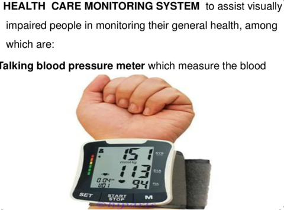

Globally, the leading causes of vision impairment are:
->Uncorrected Refractive Errors
->Cataract
->Age-Related Macular Degeneration
->Glaucoma
->Diabetic Retinopathy
->Corneal Opacity
->Trachoma
economic blindness
Social blindness
Manifest blindness
Curable blindness
Preventable blindness
Avoidable blindness
VADX--->good nutrition
TRACHOMA--->good water and sanitization
RUBELLA AND MEASLES--->immunization
CATARACT--->surgery
GLAUCOMA-->medical and surgical
DIABETIC RETINOPATHY--->medical and laser T/T
REFRACTIVE ERRORS-->spectacles
ONCHOCERCIASIS--->medical treatment (ivermectin)
CORNEAL SCARRING--->keratoplasty
LOW VISION--->low vision aids
ID Cane
Guide Cane
Probing/Movility Cane
Standard Canes
Offset Canes
Multiple-legged Canes
Quad Canes
Tripod Canes
Seat Canes
Electrical Shock Canes
Sword Canes
Hammer Canes
Gun Canes
Tactical Combat Canes (for Martial Arts)
Long Canes
Guide Canes
Symbol Canes
Support Canes
White Canes (With Different Colors)